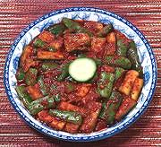

|
Cucumber Salad, YunnanChina, Yunnan, far Northwest | ||||
| Makes: Effort: Sched: DoAhead: |
1-1/2 # ** 40 min Yes |
An interesting salad from the Tibetan corner of Yunnan. It's dressed quite differently from the norm, but I find it a bit addicting. It does have chili bite, but you can control that. | |||
|
1-1/2 2 ----- 3 1/2 3 1/2 1 2 ----- |
# t --- T T T t T T --- |
Cucumbers (1) Salt -- Dressing Chili Flake (2) Sichuan Peppercorns (3) Oil Sugar Soy Sauce Black Rice Vinegar (4) ---------- |
Make - (40 min - 20 min work)
|